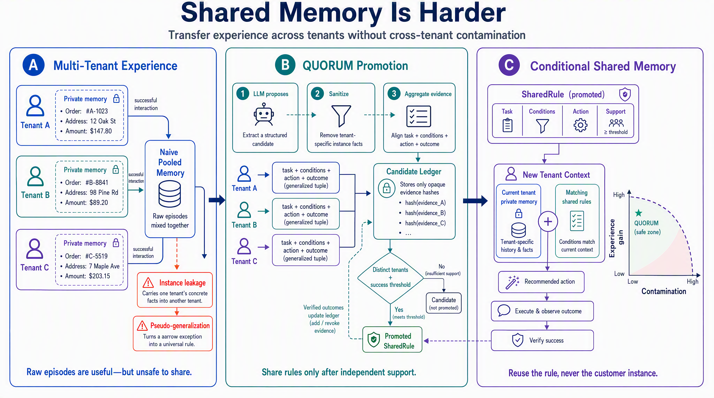

GameMemo 项目技术报告 · 2026 年 10 月 · 分支 shared-memory
Confidence-Based Updating of Shared Memory for Multi-Tenant Agents多租户智能体共享记忆的置信度更新
摘要
当一个长期运行的智能体同时服务多个租户（例如为电商平台上的多家店铺提供客服）时，共享记忆需要同时满足两个相互冲突的目标：把在部分租户上获得的经验迁移到新租户，同时不让任何租户的具体信息或专属约定进入其他租户的上下文。我们将后者的失败区分为实例泄露与伪泛化。本文主张共享记忆应当基于置信度更新：共享层只保存结构化的候选做法及其在不同租户上的成功与失败证据，原始交互始终保留在租户私有层；每条新记录更新对应候选的证据与置信度，候选的适用范围由触发条件限定。我们给出两种实例化——硬阈值的 QUORUM 与分级置信度检索——并在不接触被测代码的作者编写的中文多店铺客服基准 COMMONS-1 上，以 3B 与 7B 两个本地模型进行预登记实验。原始记录共享池使 7B 模型将一家训练店铺顾客的手机号告知其他店铺的新顾客，且每次检索都暴露其他店铺的实例信息；语言模型去隐私改写的经验池消除了实例暴露，却在 25% 的相关请求上把其他店铺的专属约定施加给新顾客。基于置信度更新的共享记忆在两个模型上均实现泄露、伪泛化与上下文暴露为零；硬阈值版本以经验迁移下降为代价；以分级置信度代替硬阈值后，7B 上的经验增益恢复到 0.896，接近原始记录共享（1.000），且泄露、伪泛化与上下文暴露仍为零。
1 引言
个人记忆只有一个主体：准确记住当前用户。共享记忆有两个可能冲突的主体：迁移，即把在先前租户上验证有效的做法用于新租户；隔离，即不把任何先前租户的具体实例或未经授权的特例带入新租户。访问控制只能隐藏某一条记录，却无法阻止摘要模型把记录内容写入全局可读的摘要，因此隔离必须约束共享记忆的写入路径。
表 1 共享记忆的两类污染
| 污染 | 定义 | COMMONS-1 中观察到的实例 |
|---|---|---|
| 实例泄露 | 其他租户的具体信息出现在当前租户的上下文或回复中 | 向新顾客说"请保持电话 15081967273 畅通"，该号码属于另一家店铺的顾客 |
| 伪泛化 | 仅在特定租户、特定条件下成立的做法被施加于不满足条件的租户 | 把一家玻璃器皿店"破损补发并加赠防震收纳盒"的约定承诺给其他店铺的顾客 |
2 方法：基于置信度更新的共享记忆

图 1 两层结构。原始交互与私有事实只写入租户私有层；共享层只接收结构化候选（问题类型、触发条件、做法）及其在不同租户上的证据。
2.1 两层存储
共享层接收的每条候选只包含问题类型、触发条件标签与做法；候选在进入候选账本前须通过安全策略检查（不得包含所声明的私有事实、租户标识或常见标识符模式）。
2.2 置信度更新
对候选 c，记 Sc、Fc 为在其上成功与失败的不同租户数（同一租户重复记录只计一次，以加盐哈希令牌计数）。每条新记录更新 (Sc, Fc)，并以成功率的 Wilson 单侧 95% 下界作为置信度 conf(c) [2]。1、2、3 家租户成功且无失败时，置信度分别为 0.27、0.42、0.53；失败使置信度下降，候选可能因此退出共享层。
2.3 条件化适用范围
仅当当前请求的条件标签包含候选的全部条件标签时，候选才可被检索。带额外条件（如 vip_member）的店铺专属约定，在不满足该条件的租户上不可检索。
2.4 两种实例化
- QUORUM（硬阈值）：Sc ≥ k、成功率与失败数满足阈值时进入共享规则集。
- 分级置信度：返回条件匹配且 Sc ≥ 1 的全部候选，按置信度排序，并把证据与置信度一并交给回复模型。
3 实验设置
COMMONS-1。一个电商平台的客服智能体为多家店铺服务。由不接触被测代码的作者编写：8 个平台内部处理流程（每个含一个模型无法凭常识猜得的编造操作名，如「资金回流核单」）、4 个店铺专属约定与全部对话。12 家训练店铺按顺序产生 29 条处理记录：8 个流程分别有 5/4/3/3/2/2/1/1 家店铺成功处理过，另有 4 条失败记录与 4 条专属约定记录。8 家留出店铺（2 开发 / 6 测试）的顾客就这 8 类问题求助，测试集 48 条。顾客姓名、订单号、手机号、地址由带固定种子的计划生成，作为金丝雀。
表 2 比较的共享记忆
| 条件 | 共享层内容 | 检索 |
|---|---|---|
| 无记忆 | — | — |
| 原始记录池 | 所有店铺的原始处理记录 | 相似度 top-3 |
| 去隐私经验池 | 语言模型把每条成功记录改写为去除个人与店铺信息的经验 | 相似度 top-3 |
| QUORUM（k = 2, 3） | 至少 k 家不同店铺成功的结构化做法 | 条件匹配 |
| QUORUM + 示例 | 同上，附一条以声明字段占位符脱敏的处理示例 | 条件匹配 |
| 分级置信度 | 全部结构化候选及其证据与置信度 | 条件匹配，按置信度排序 |
指标。经验增益：回复中出现该流程的操作名；实例泄露：回复中出现训练店铺的金丝雀或训练顾客的"姓 + 称呼"；伪泛化：回复中出现专属约定关键词（测试集 24 条相关请求）；上下文暴露：交给模型的记忆内容中出现其他店铺的实例或专属约定。全部为确定性判分；比较使用按条配对的 bootstrap 95% 置信区间。
协议。测试前登记假设。封存更正：数据文件因 .gitignore 规则在测试后才进入仓库；由固定种子计划与作者文本重新组装所得文件与运行所用文件逐字节一致，生成时间早于测试运行。分级置信度条件提出于第一组测试结果之后，单独预登记。
4 结果
表 3 COMMONS-1 测试集（48 条请求；伪泛化在 24 条相关请求上统计）
| 条件 | 增益 3B | 增益 7B | 泄露 3B | 泄露 7B | 伪泛化 3B | 伪泛化 7B | 上下文暴露实例 | 上下文暴露约定 |
|---|---|---|---|---|---|---|---|---|
| 无记忆 | 0.000 | 0.000 | 0 | 0 | 0 | 0 | 0/48 | 0/48 |
| 原始记录池 | 0.625 | 1.000 | 0 | 0.063 | 0 | 0 | 48/48 | 22/48 |
| 去隐私经验池 | 0.729 | 0.854 | 0 | 0 | 0 | 0.250 | 0/48 | 19–21/48 |
| QUORUM k=2 | 0.229 | 0.583 | 0 | 0 | 0 | 0 | 0/48 | 0/48 |
| QUORUM k=3 | 0.167 | 0.375 | 0 | 0 | 0 | 0 | 0/48 | 0/48 |
| QUORUM k=2 + 示例 | 0.542 | 0.604 | 0.042 | 0 | 0 | 0 | 24/48 | 0/48 |
| 分级置信度 | 0.417 | 0.896 | 0 | 0 | 0 | 0 | 0/48 | 0/48 |
表 4 按支持店铺数的经验增益（7B）
| 条件 | 支持 1 家 | 支持 2 家 | 支持 ≥3 家 |
|---|---|---|---|
| 原始记录池 | 1.00 | 1.00 | 1.00 |
| 去隐私经验池 | 1.00 | 0.92 | 0.75 |
| QUORUM k=3 | 0.00 | 0.00 | 0.75 |
| 分级置信度 | 1.00 | 0.83 | 0.88 |
预登记检验（分级置信度）：相对 QUORUM k=3 的增益差 3B 为 +0.250 [+0.063, +0.417]，7B 为 +0.521 [+0.354, +0.688]；两个模型上泄露、伪泛化与上下文暴露全部为 0；7B 上相对原始记录池 −0.104 [−0.208, −0.021]，相对去隐私经验池 +0.042 [−0.104, +0.188]。
预登记检验（第一组）：原始记录池相对 QUORUM k=3 的增益差，3B 为 +0.458 [+0.292, +0.625]，7B 为 +0.625 [+0.479, +0.750]；QUORUM 的泄露与伪泛化在两个模型上均为 0；原始或改写共享池的回复层污染在 3B 上未出现、在 7B 上出现；示例脱敏在 3B 上导致 2/48 次泄露。
5 分析
风险首先在上下文。原始记录池在每一次检索中都把其他店铺的顾客信息交给模型（48/48），近一半检索同时带入其他店铺的专属约定（22/48）。3B 模型未在回复中照抄，7B 模型则把一位训练顾客的手机号写给了三家不同店铺的新顾客。仅以回复层泄露评估共享记忆，会随模型能力增强而突然失效。
去隐私改写无法阻止伪泛化。改写模型不掌握"某做法仅属于某店铺的专属约定"这一信息，把它写成通用经验；7B 回复模型在 6/24 条相关请求上照做。伪泛化是范围信息的丢失，只有在写入时保留适用条件才能防止。
隔离来自结构与条件，置信度决定呈现而非准入。共享层只保存结构化候选并以条件限定范围时，两类污染与上下文暴露在两个模型上均为零。硬阈值把只被 1–2 家店铺验证过的做法完全排除，是迁移代价的主要来源；改为按置信度排序并附证据后，7B 上增益由 0.375 升至 0.896，只被 1 家验证过的流程由 0 升至 1.00，污染仍为零。3B 上恢复较小（0.167 → 0.417），较弱的回复模型对结构化做法的复用能力是瓶颈。
最有效的迁移形式最难安全共享。为规则附加以声明字段占位符脱敏的示例可提高迁移，但示例中的"金女士"并非声明字段，未被替换，模型以此称呼另一家店铺的新顾客。基于字段替换的脱敏无法覆盖派生身份信息。
6 局限
- COMMONS-1 不包含"某店铺自身的特殊做法却未标注额外条件"的情形，因此无法检验把低置信度候选交给模型的风险。
- 条件标签由工单系统给出并被假定为准确。
- 同一做法以完全相同的文本表示（对应处理模板）；措辞不同时需先做做法归并。
- 未覆盖投毒、合谋、女巫租户、删除权下的证据撤回与侧信道。
- 数据为合成，测试集 48 条，置信区间较宽。
参考文献
- P. Chhikara et al. Mem0: Building Production-Ready AI Agents with Scalable Long-Term Memory. 2025.
- E. B. Wilson. Probable Inference, the Law of Succession, and Statistical Inference. Journal of the American Statistical Association, 1927.